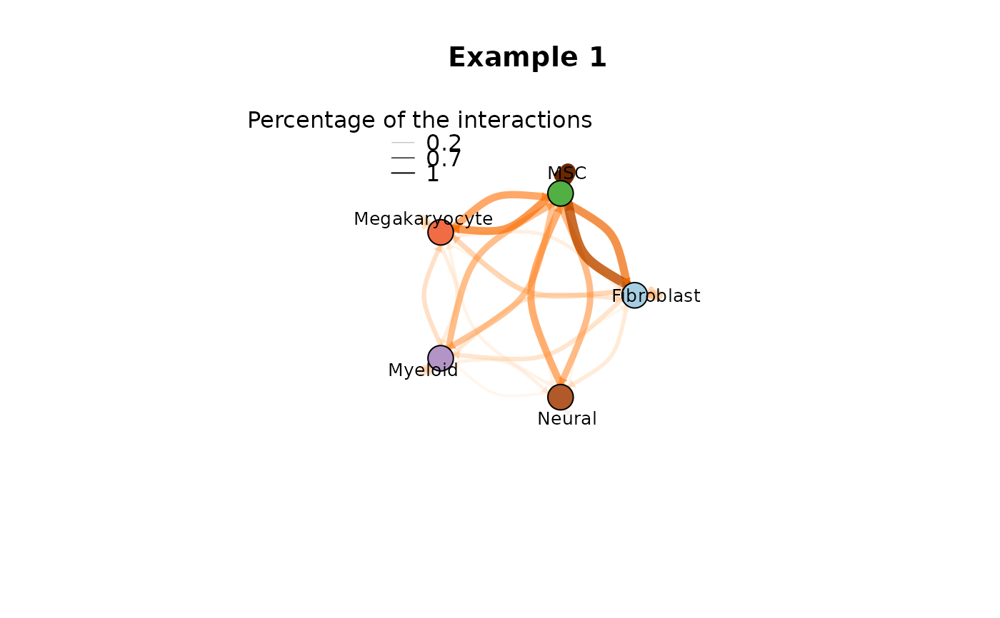

This function do a CCI plot
plot_cci( graph, colors, plt_name, coords, emax = NULL, leg = FALSE, low = 25, high = 75, ignore_alpha = FALSE, log = FALSE, efactor = 8, vfactor = 12, vnames = T, pg = NULL )
| graph | Paths of single condition LR data |
|---|---|
| colors | Cell type (Cluster) Colors |
| plt_name | Plot Name (Title) |
| coords | object coordinates |
| emax | Max MeanLR across the all inputs, if its not defined, the method going to consider the max find within a sample |
| leg | Set color legend |
| low | Lower threshold: This parameter low and high defines the edges |
| high | Higher threshould which will be filtered. Edges within the interval [low\,high] are filtered. |
| ignore_alpha | not include transparency on the plot |
| log | logscale the interactions |
| efactor | edge scale factor |
| vfactor | edge scale factor |
| vnames | remove vertex labels |
| pg | pagerank values |
R default plot
paths <- c('CTR' = system.file("extdata", "ctr_nils_bm_human.csv", package = "CrossTalkeR"), 'EXP' = system.file("extdata", "exp_nils_bm_human.csv", package = "CrossTalkeR")) genes <- c('TGFB1') output = system.file("extdata", package = "CrossTalkeR") data <- generate_report(paths, genes, out_path=paste0(output,'/'), threshold=0, out_file = 'vignettes_example.html', output_fmt = "html_document", report = FALSE)#>#> CTR #> "/tmp/RtmpVbBFue/temp_libpath205728ee23d7/CrossTalkeR/extdata/ctr_nils_bm_human.csv" #> [1] 5 #> EXP #> "/tmp/RtmpVbBFue/temp_libpath205728ee23d7/CrossTalkeR/extdata/exp_nils_bm_human.csv" #> [1] 5#>#>#>#>#>#>#>#>#>#>#>#>#>#>#>#>#>#>#>#>#>#>#>#>#>#>#>#>#>#>#>#>#>#>#>#>#>#>#>#>plot_cci(graph = data@graphs$CTR, colors = data@colors, plt_name = 'Example 1', coords = data@coords[igraph::V(data@graphs$CTR)$name,], emax = NULL, leg = FALSE, low = 0, high = 0, ignore_alpha = FALSE, log = FALSE, efactor = 8, vfactor = 12, vnames = TRUE)